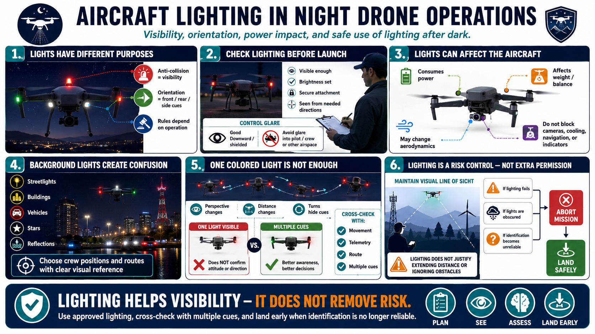

Aircraft Lighting and Identification
Connecting to LMS... Progress: in progress

Narration
Aircraft lighting serves different purposes. Anti-collision lighting helps make the drone visible to the operator and others. Orientation lights help distinguish the aircraft's front, rear, or sides. Requirements and approved configurations depend on the operation and current rules.
Lighting must be visible enough for its intended purpose without creating excessive glare for the pilot, camera, crew, or other people. Verify operation, brightness settings, attachment security, and visibility from relevant directions before launch.
Additional lights consume power and can affect weight, balance, aerodynamics, or sensor behavior. Include them in battery planning and confirm that mounting does not obstruct navigation, cooling, cameras, or required indicators.
Background lights can confuse identification. Streetlights, vehicles, buildings, towers, stars, and reflections may resemble or hide aircraft lights. Choose crew positions and routes that preserve a clear visual reference and avoid visually crowded backgrounds where practical.
Recognizing a colored light does not always establish aircraft attitude. Perspective, distance, turns, and partial obstruction can change what is visible. Cross-check movement, telemetry, route, and multiple cues before commanding a correction.
Lighting is a risk control, not permission to extend distance, operate beyond visual capability, or ignore obstacles. If required lighting fails, becomes obscured, or no longer supports reliable identification, follow the planned abort and landing procedure.